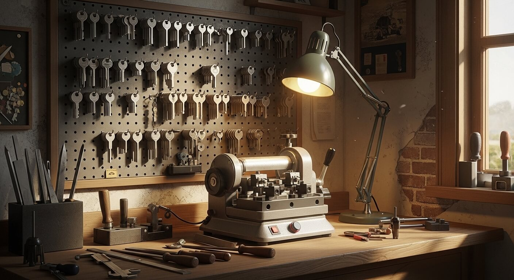
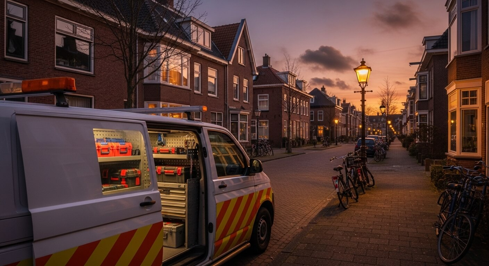
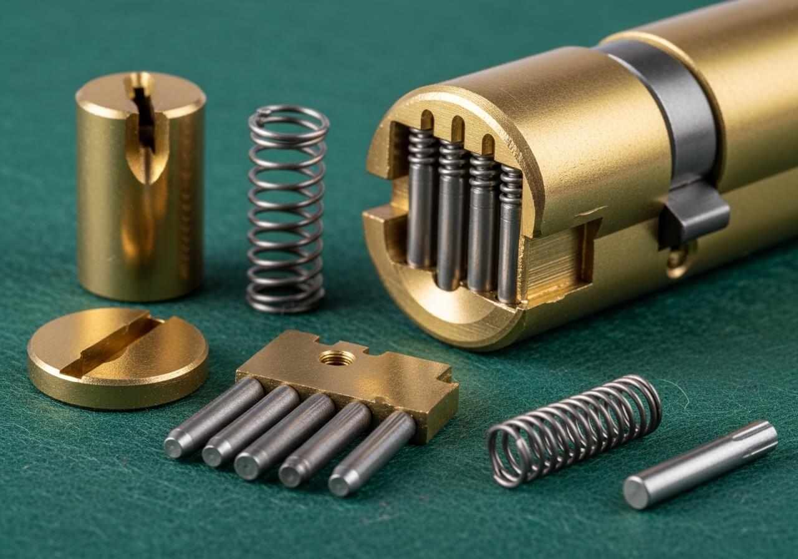

Beveiliging
7 tips om inbraak te voorkomen deze zomer
De zomervakantie is piekseizoen voor inbrekers. Met deze tips maakt u het ze zo moeilijk mogelijk.
Alles over sloten, beveiliging en inbraakpreventie.

De zomervakantie is piekseizoen voor inbrekers. Met deze tips maakt u het ze zo moeilijk mogelijk.

Van 1 tot 3 sterren: wij leggen uit wat de verschillen zijn en welk niveau bij uw situatie past.

Handig, maar zijn ze ook veilig? Wij vergelijken de populairste smart locks op de Nederlandse markt.

Geen paniek. Wij leggen uit wat u het beste kunt doen als u voor een dichte deur staat.

Een meergrenpelslot vergrendelt uw deur op meerdere punten. Ontdek waarom dit de gouden standaard is.

In theorie wel, maar er zijn valkuilen. Lees wanneer u het zelf kunt doen en wanneer u beter een expert belt.